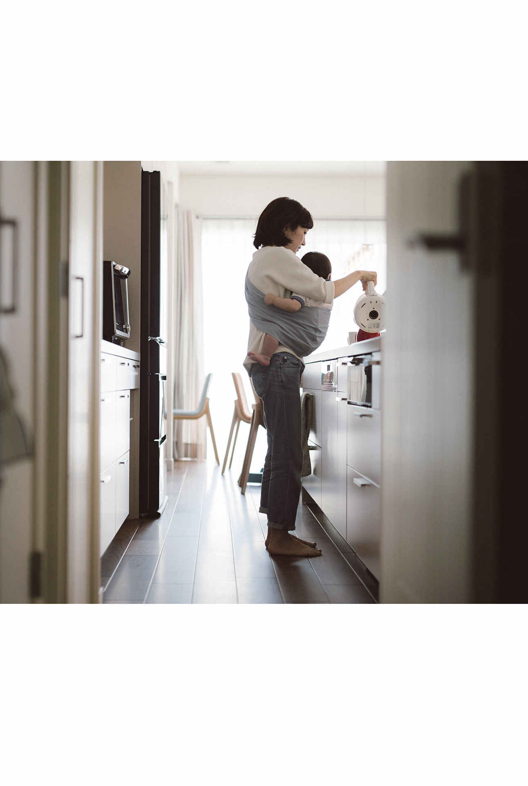
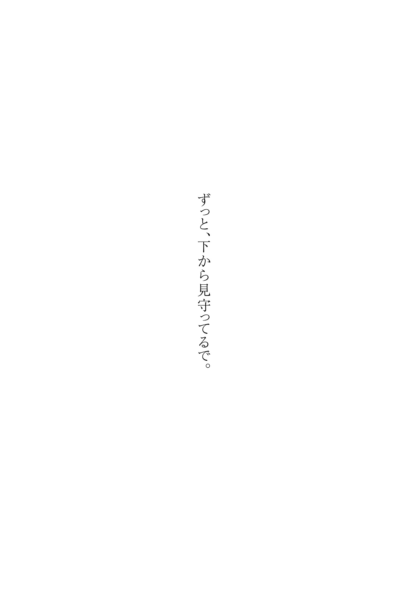
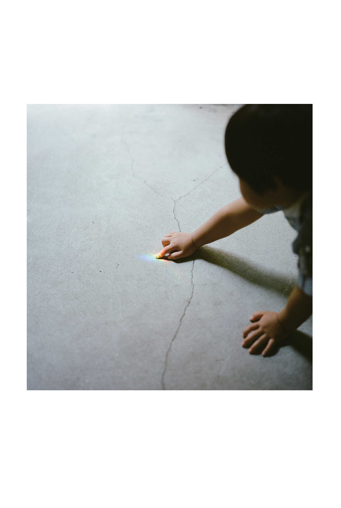
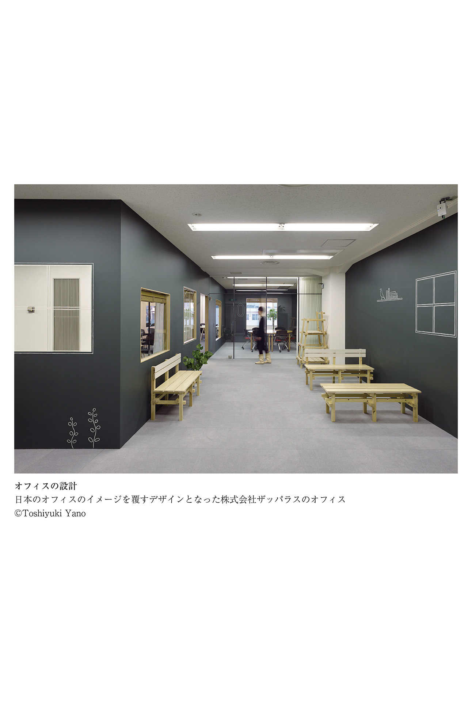

| 床は大事 第１巻 床を語る ――建築家の視点 「床」のない家はない | |
| 朝日ウッドテック株式会社 | |
| 株式会社 ダイヤモンド・ビジネス企画 (2017) | |
この本は縦書きでレイアウトされています。
また、ご覧になる機種により、表示の差が認められることがあります。
本作品を電子書籍版に収録するにあたり、一部の漢字が簡略体で表記されている場合があります。


はじめに
もし床が自由におしゃべりを始めたら、私たちの床への意識は大きく変わっていたでしょう。
でも床はいつも静かに私たちの生活を支えるばかりで、普段はほとんど意識されることがありません。
床は、暮らしを支える大切な存在です。
日本人は古来、家に帰ると靴を脱ぎ、床に腰を下ろし、床の上に横になりました。
私たち日本人にとって、床は一生もの。
かけがえのない暮らしの時間とともにあるものです。
「靴脱ぎの文化」などという言い方もあります。
床は、日本の文化そのものなのかもしれません。
床は、住宅のクオリティを決める「住まいの起点」であり、住み心地の満足度を決める「暮らしの起点」。
そう「床は大事」なのです。
私たちの暮らしを支える大切な床が、一体どのように生まれ、どのように変化してきたのか。
そして、私たちにとって床は、どのような存在なのか。
そんな知られざる床の魅力について、さまざまな専門家の方にお話を伺い、一冊の書籍にまとめました。
これは、床が主役の、床を中心とした、床だけの物語。
おしゃべりじゃない床の代わりに、私たちが床の魅力をお伝えします。
本書が知られざる床の世界を知っていただくための一助になれば幸いです。
二〇一七年一〇月 朝日ウッドテック株式会社
目 次
第一巻 床を語る
――建築家の視点 「床」のない家はない
序 おしゃべりな床
建築家 手塚貴晴・手塚由比
建築家 中村好文
建築家 隈 研吾
建築家 谷尻 誠
建築家の視点
木造建築の時を超える価値
建築家 手塚貴晴・手塚由比
「家」という領域を規定するのは「床」である
「床のない建築を考えてみなさい」
大学の講義で、学生たちに「建築とは何か」を教えるとき、私はよくこういう質問を投げかけます。「底ナシ建築」を想像してみなさい、という、一種の哲学的な問いかけです。
建築の構成要素を考えると、屋根、天井、柱、窓、壁、そして床、という具合に分解することができるでしょう。ならば、この中で基本となる構成要素は何か。
窓のない建築はいくらでもあります。壁のない建築といえば、四阿 などが思い浮かびます。天井のない建築も取り立てて珍しいものではありません。しかし「底ナシ建築」となるとどうでしょうか。
このように考えれば、「柱」や「屋根」などと同じように、「床」もまた、建築の基本要素であることがおわかりになると思います。
日本建築の場合、壁や窓は基本要素には含まれません。基本的には、柱と屋根と床さえあれば、不自由はあってもそこで暮らすことができるからです。いわば、「屋根が床の上に浮いている」のが日本建築だと言っていいでしょう。そして、床とは家の中で唯一、人間が常に触れている、そして触れずに生活できない部分でもあります。
壁や天井であれば、日常生活の中でそうそう触れることもないでしょうし、もしそこに何か問題があったとしても、よくよく観察してみなければわからない。その点、床は、家にいる限り常時触れている部分なのです。私たちが自宅を建てるときにも、一点豪華主義といいますか、床にだけはこだわって造りました。
日本という国の気候風土は、建築にも密接に影響を与えてきました。それによって、昔から床の文化、靴脱ぎの文化というものが発展してきたのです。昔は舗装された道路がほとんどなく、一雨くれば道はすぐぬかるみになりました。家に入るときは、履物を脱いで上がるのが基本です。そのために土間というものが存在してきたのです。
現在でも、インドなどへ行くと同様の文化が残っております。インドの場合、牛が神聖な生き物として大事にされていますが、そのために道はどこも牛のフンがそこらじゅうに散らばっています。履物を脱がないと、家の中に牛のフンが入ってきてしまう。したがって、「扉を開けた瞬間」ではなく、「履物を脱いで上がった瞬間」に「家に入った」ということになります。ここでは、「家の中と外」という領域を規定するのは扉でなく、床ということになります。
日本でもこのような言い方が残っています。
「上がってよろしいでしょうか？」
「どうぞお上がりください」
この言葉は、「家」という領域を規定するのは「床」である、ということを意味しています。すなわち、「家＝床」という意味になっているのです。
時を超えてずっと家族を見守り続ける「家」
私が生まれ育った家には、とても気持ちのいい木の床がありました。今もはっきりと覚えていますが、四畳半の部屋の手前にヒノキの廊下があり、暖かいひだまりができていました。そのひだまりに無造作に寝転ぶことが、幼い頃の私の大のお気に入りでした。そこは父の設計した家で、立派なお屋敷などではありませんでしたが、私にとっては「家」というものの原点の一つになっていると思います。
ちなみに、妻の由比の実家も妻の父親が設計した家ですが、そこにもやはり気持ちのいい縁側があったといいます。幼い頃の妻は、その縁側を裸足で走り回ったり、私と同じようにひだまりで寝転んだりしていたそうです。おそらく、そうした原体験が、現在、私たちの造る「家」の原点となっているのでしょう。
私たち夫婦の場合、子どもの頃に木の床の上でゴロゴロしていた、という共通の原体験を持っていたわけですが、「外の風が感じられて、かつ木の温かみのある場所」を気持ちいいと感じるのは、人間にとって本質的な感覚なのではないかと考えております。
感覚、あるいは感性と言い換えてもいいでしょう。「こういうのが気持ちいいんだ」という記憶が残っているのは、とても大事なことだと思っています。
もう一つ、私の中で原点になっている建築としては、佐賀県の有田町に、曽祖父が明治時代に建てた家があります。佐賀銀行の頭取であった曽祖父は佐賀市内に別の家を所有しており、有田町の家は父の兄、私から見ると伯父が住んでいて、私も子どもの頃から何度も連れられて行ったものでした。初めてそこを訪ねてから五〇年近く、ここは少しも変わっていません。いつ行ってみても同じ、現在に至っても、建物本体は何も変わっていないのです。
これは、本当にすごいことではないかと思います。人間の寿命の長さに比べて、木で造った建築の寿命というのは、非常に長いのです。これが例えば、鉄筋コンクリートなどで造られた建築であれば、残っていなかったのではないかと思います。
時を超えて、ずっと家族を見守り続けている。その「すごさ」を実感させられる思いです。一〇〇年以上という時間の中で何も変わらない――これが「木」のすごさです。やはり、人間が住む場所としては、「木」というのは原点だと思います。
建築には後世に文化を伝える力がある
有田町の家はせいぜい築一一〇年というところですが、奈良などの古都へ行くとこれより古い木造建築はいくらでもあります。
例えば、唐招提寺がそうです。私はときどき、ああした昔の木造建築を観に行くようにしていますが、観るたびに圧倒されています。
「すごいなあ、昔の巨匠は」
あれほどのレベルになると、木が古くなって腐食してきたら随時そこから取り換え、修繕を重ねていくので、建築の寿命は優に一〇〇〇年を超えてきます。
もともと「木」というのは最先端の材料でもあったはずです。ところが、建築の世界に構造計算という概念が導入された時、木というものを理解できるだけの力量が、日本の構造力学にも、世界の構造力学の中にも存在しませんでした。ナマモノであるが故に分析できなかったということでしょう。そのために、下手な造り方をして、壊れてしまっていました。その結果、理解できない人々は「ナマモノは危ないから食べないようにしましょう」という理屈で封印されてしまったのです。
しかし、現在では、どうのように扱えば良いのかがわかるようになりました。プログラムがようやく追いついてきて、生き物をちゃんと計算できるような時代になったのです。
少し以前のことですが、薬師寺の塔が補修されたことがありました。当時は金物を入れて補修していましたが、もし現在であれば、金物は入れなかったと思います。なぜなら、時間が経つと金物の周囲の木が縮むため、ガタガタになってしまうからです。それよりも、この木が縮む性質を利用し、時間が経って自然に締まってくるのを待つのが正しいやり方なのです。それこそが木の美学、生きているということの素晴らしさです。それが、ほんの少し前まではできなかったのですから、本当に惜しいと思います。現在では、木というものがいかに素晴らしく、力学的にも強じんであるかということを理論的に実証することができるようになりました。これからは、本来の建築が本当の意味で造れる時代になると確信しております。
床は、日本建築文化の「原点」である
建築の面白いところとして、建物とそこに住んでいる人は、どこか切っても切れない部分があると思います。
よく、「ペットは飼い主に似る」ということを言いますが、それに近いのかもしれません。私たち自身の自宅も、やはり住んでいる私たちに似た雰囲気をもっているような気がします。
以前、私たちが手がけた「屋 根の家」という屋根が床になっている住宅があります。これも、施主のキャラクターや考え方に沿って設計したものになっています。
これと近い発想から生まれたのが、東京都立川市の「ふじようちえん」です。
ここでは、一周一八〇ｍほどの、木の屋根というか屋上を設けていて、園児たちはそこを裸足で走り回って遊ぶことができるようになっています。
今どきの子どもはなかなか運動しないものですが、「ふじようちえん」では、放っておけば園児たちがずっと屋根の上を走り回っています。ある大学の先生が調査したところ、よく走る子は午前中だけで約六㎞、平均でも約四㎞走っていたそうです。最近は東京にも運動能力に重きを置いた幼稚園がたくさんありますが、調べてみると、「ふじようちえん」の園児たちはいちばん筋肉が発達していることがわかりました。
私たちは幼児教育の専門家ではありませんが、「木の床を裸足で歩く」という体験は日本人にとって肉体に染みついた基本ではないかと考えています。裸足で歩いて足裏を刺激する、ということは、子どもたちの健康にも良いのではないかと思います。実際、私たちの子どももそうした環境で育ててきました。
「ふじようちえん」の園児たちは「目の輝きが違う」とか「イキイキして、とてもハキハキしている」と評判ですが、これはもちろん、園長先生をはじめとするスタッフの皆様の日ごろの教育の賜物でしょう。ただ、園の教育指針に沿った環境をつくることは、私たちにもお手伝いできると思っています。最適な環境を提供することで、教育の成果は何倍にもふくらみます。
そういう意味では、「人を育てる土壌を、私たちが造る」といってもいいでしょう。
もちろん、環境だけ整えてもダメで、そこに園長先生のキャラクターがあって、初めてあの教育が成立しているのだと思います。どちらが欠けても成立しないでしょう。
そして、環境という大きな枠組みの中で、子どもたちの肉体と直接触れる部分が床。肌に触れる木の記憶というのは、何となく、深層意識に残ってくるものではないかと思っています。
妻の由比はよく、学生たちに言っているそうです。
美味しい料理を食べたことがない人に、美味しい料理はつくれないでしょう？ と。
建築も同じことで、気持ちが良かった場所を知らない人に、気持ちのいい場所は造れません。
木の床の上を裸足で走り回ったり、床でゴロゴロしながらひなたぼっこしたり......。そんな心地よい記憶を、頭でなく肉体で覚えているのは、とてもしあわせなことではないでしょうか。
床は、「お上がりください」と人を迎え入れる場所であり、人が常に触れている場所でもあり、そして、人の深層意識に刻み込まれている気持ちの良い場所でもあります。いわば、日本建築文化の「原点」といって良いのではないかと思います。
＊１ 屋根の家
二〇〇二年ＪＩＡ（日本建築家協会）の新人賞を受賞した作品で、代表作品の一つとなっている。竣工一年目で見学者が一〇〇〇人を越えたプロジェクトで、最初のスケッチとほとんどプランが変わっていない
建築家の視点
普段着の床の記憶
建築家 中村好文
居心地の良い場所をさらに居心地良く設える
私が生まれ育ったのは、千葉県九十九里浜の茅葺き屋根の家です。
本当に簡素な田舎の家でしたが、南側と西側にＬ字型に廻 らされた木の縁側がありました。私はその縁側が好きでした。松の木の床には松の木特有の黒みがあって、節だけが浮かび上がっている部分を特に気に入っていました。
普通は縁側といえば三尺ですが、南側の縁側は広くて四尺（約一二〇㎝）ありました。西側の縁側の傍らには大きな合歓木 が自生していて、大きな緑陰があたりをドーム状に覆い、そこがとても素晴らしく居心地の良い場所だったのです。
夏になると、繊毛のような花の先端がほのかに桃色に染まり、甘い香りを漂わせます。日暮れ時、合歓木が複葉を閉じて眠りにつくと、何とも物寂しい感じがしたものです。そうした豊かな時間が流れる場所が、私にとって居心地の良いものでした。
海辺の住まいなので、朝夕、必ず海風と陸風があります。
幼少期の私は、家の中でも「この場所なら、この風が気持ちいい」と思える場所を自然に探して、座布団を持ち出して寝転がったり、宿題をやったりしていました。犬や猫がそうするのと同じで、頭で考えるのではなく、肌で感じる感覚的なものです。居心地の良い場所で自分の好きなことをする感覚は、そういうところで培われたのでしょう。
例えば、私の記憶にあるいちばん古い居心地の良い場所は、母親の使っているミシンの下でした。ちょうど小さな子どもの身体が収まる狭い空間でしたが、そこにすっぽりもぐりこんで、ラジオを聴いて過ごしていました。当時よく聴いていたラジオの番組を調べてみたら、六歳頃のことのようです。そのうち、新聞紙を四つに折りたたんでミシンの天板の上からすだれのように垂らすと、さらに居心地が良いと感じることに気づきました。言ってみれば、この新聞紙が私の「住まい」に対するこだわりの原点になっているのかもしれません。
居心地の良い場所を自分の設えでさらに居心地の良い場所にして、そこで好きなことをする。そんな場所と時間をつくることを遊びながらもやっていました。
家のすぐ外には海岸の松林があります。松の木に登って、枝と枝に一枚の板を渡して座れるようにしてみたり、寄りかかれるようにしてみたり。
まさに「床」をつくっていたのです。浜辺ですから、その辺に床の切れ端のような板材がいくらでもあります。それを拾って、松の木に登って、高い所に空中の床をつくると、海が見渡せてとても気持ちが良かったのです。漁船が青い海の上を滑っていくポンポンポンという音。焼玉エンジンという昔のエンジンの音が潮風に乗って聞こえてくるのですが、それをＢＧＭのように聞きながら乾燥芋を食べたり、冒険小説や漫画を読んだりして過ごすということを楽しんでいました。
時間と共に心地良く変化していくことの大切さ
居心地の良い場所と、そこでする行為というのは、「住まいとその暮らし」だと思います。住まいという良い入れ物があり、そこで行なわれる暮らしがセットになっている感じ。それが、松の木につくった「巣」のような、「小さな手づくりの場所」にもあったわけです。住まいという言葉に「巣 」の音が入っていることにも、私は何か特別な意味があるように思います。そうした「住まいの心地」を何で感じるかというと、床なら足の裏の感触。肌で触れた感覚が意外と大切です。特に日本人は、足裏から何か特別な「心地」を感じ取っているように思うのです。
私はいつもEnkel とPatina を大切にしています。エンケルはスウェーデン語で「普通でちょうどいい」という意味。パティーナはラテン語で、「経年変化する味わい」という意味です。「古色 」という言葉でも表せますが、時間が経って、みすぼらしくすり減るのとは違う、徐々に魅力を増していく素材の味わいを大切にしたいのです。
私は、たぶん「触れる」という感覚を大切にしている人間で、触覚に訴える気持ち良さが居心地の良さ、気持ちの良いことに繫がるという感覚があるので、建築と家具づくりをやっています。
伊 東豊雄さんもおっしゃっていますが、これからは五感の時代の中でも「触覚」、「触感」というものが大事になってくるでしょう。触感というのは、最も原始的な感覚だとも言われています。
私自身の中にも、そういった感覚を大事にしたいという思いがあります。触感もそうですし、経年変化で感じる美しさや温もりがある材料で建築も家具づくりもやりたいという気持ちが常にあるのです。木はもちろん、皮や鉄も時間が経てば傷みや錆が出ます。そういう素材の変化が好きなのです。だから、床をつくるときも、できればそういう経年変化で味わいを増す素材を使いたいと思っています。床は、家の中でも特に直接触れることの多い場所ですから、裸足で歩いたときに感触が心地よく、たくさんの人の足に踏まれることでますます風合いの深まる天然素材にこだわりたいと考えているのです。

映画と建築は似ている――素材と人が一体になる意味
私は大の映画好きなのですが、昔から黒澤明監督の映画づくりのこだわりに興味をもっていました。中でも美術監督を務めた村木与四郎さんの手掛けられたセットは目が覚めるような出来栄えです。彼は日本の映画美術の重鎮で、黒澤映画のほとんどの作品を手がけられています。
黒澤監督は完璧主義で、セットの細部にまで大変こだわることで知られていますが、その映画で登場する床板も、松の板を石の間に平に置いて下から炭で焼き、焼き板をつくるところから始まるそうです。
焼き板の柔らかいところをブラシでこすることで堅い目が浮き出て、浮造 り（木材の年輪を引き立てて見せるために、柔らかな部分を磨いてへこませ、堅い木目の部分を浮き立つようにした仕上げ方）の強い床をつくりだしているのです。
そこにさらに泥絵の具を塗ってそれを拭き取り、ワックスで磨く。黒澤監督以下、みんながこの作業を行なうのです。当時すでに大スターだった三船敏郎さんも一緒になってやったといいます。
そうすることで床の風合いがすごく良くなるのです。『赤ひげ』もそうでしたし、『七人の侍』などもそうです。『七人の侍』では、野武士から村を守るために農家の方が侍を雇い、彼らは粟や稗を食べて、侍には白米を食べさせるというシーンがあります。その中で、お米が盗まれた後、残ったわずかなお米が床にパラパラと散らばり、農家の方が泣きながら米粒を拾いあげるというシーンがあります。悲しいほど貴重な米粒が木目のへこんだ部分で真っ白くポツポツと浮き上がる。素晴らしいシーンです。
それは黒澤監督や美術監督だけの力ではなく、床磨きをして一つのものをみんなでつくりあげる一体感から出来上がっていると思います。映画のセットへの愛情にもなっています。
黒澤映画ではリハーサルのときも、ずっと本番のメイクをして、本番の衣装を着せてやるんですね。一度、役者が役に入ったら、すぐにその役のための着物を着てもらい、垢がつくまでずっと着せておく。それは、さっきまで背広を着ていた人が、急に着物を着ても役になりきれないだろうという考え方からきています。
ずっとその着物を着ていると、その人特有の動作に着物が馴染んでいく。そうすることでその人と着物の間に一体感が生まれます。そうやって役やキャラクターをつくりあげていく。それが黒澤監督の映画のつくり方でした。
建築も同じだと思うのです。素材が、その人たちの暮らしと一体となって、それでいいものが芽生える。そのためには確かな素材でなければいけない。
そういう点でも映画と建築はつくられ方が似ている気がします。
建築というのは、建築家の頭の中にしか最終形がないんです。映画もそうです。役者には、なぜ自分の演技がダメと言われるのかわからない。最後までそれはわかりません。それで何テイクも撮り直す。けれど映画が最終的に完成して、編集されたものを観たときには、なぜそのセリフと演技でなければいけなかったかがわかるわけです。
建築家の頭の中にも「こういうものにしたい」というのがあります。それをめざさないと、自分の仕事が何をめざしているのかわからなくなります。
いろいろな職種や素材を束ねていくというところも同じですね。それぞれの素材がなぜそこに使われていて、それぞれの職人さんがどういう仕事ぶりで、どこを直さないといけないのかがわかっているのが大切なのです。
足るを知る住まいの原点と木の床
私は建築家として独立してから三二年になりますが、その間、一貫して住宅の設計と家具デザインの仕事をライフワークとして取り組んできました。大きな建築の仕事をしたくないわけではないのですが、結局のところ住宅にこだわってきたことになります。何故かと言えば、私は「人の住まい」と「そこで営まれる暮らし」にいちばん興味があり、家だけでなく、そこで営まれる暮らしがセットになった住宅の仕事が好きだったんだと思います。
私は住まいの原点は「小屋」だと考えています。落語の『寿限無 』には「食う寝るところに住むところ」というフレーズが出てきますが、それに限りなく近いシンプルなもの。あまりいろいろな要素が入りこまない「食べて、寝る場所」こそ住まいの原点であり、小屋はそれが色濃く残っているのではないかと思います。
建築家として私がつくりたいと思っているのは、住まいの原点である小屋の面影というか、気配を残している住宅です。決して、他人様に見せびらかすような立派な建築ではなく、それぞれの身の丈に合った「人の暮らし」を受け入れてくれる「普段着の住まい」、あるいは「普段使いの食器のような住まい」をつくりたいと考えてきました。
なぜ、そこまでして小屋にこだわるのか。小屋には人間の暮らしと住まいの原型があり、余計な要素が入ってこないからです。
小屋はとてもシンプルです。住まいとしての純度がとても高いからです。小屋は、ほぼ床と壁と屋根だけで出来ていて、人が生きるためのものという実感があります。
人に見せることが目的のような住宅もありますが、私はそのような〝見せたい住宅〟には、興味がありません。それよりも、自分がつくりたいのは「足るを知る」ような住まいです。建築というものは、日々の暮らしに役立つ実用的な容器であるべきだと思います。ですから、これからも人の気持ちに寄り添う普段着の住まいづくりを心がけていきたいし、できればそこには小屋の面影が宿っていてほしいと思っています。
普段着のような心地良い住まいと暮らし。素足で歩くことを考えると床の「心地」というのはとても大切です。例えば、私もオークやクリ、バーチ（樺）やビーチ（ブナ）、サクラなど、いろいろな床材を使いますが、やっぱり裸足で歩くとその触り心地の違いがわかるのです。クリとバーチは特によくわかります。
「心地」とは、「はい、これです」と突然つくられるものではなく、時間の経過と共につくられていくものだと思うのです。
「住まいの心地」は足裏で感じ取るものといえるかもしれません。足裏で感じる心地良さが、風合いを増していく洗いざらしのジーンズのようなものであってほしいと思います。もちろん建築そのものもそうあってほしいと思うのです。
人の気持ちを和やかにする住宅、人の暮らしを豊かにする住宅、人の暮らしに役立つ住宅づくり。私はこれまでも、そしてこれからもそのような住宅づくりを続けていくつもりです。そういう意味で、木の床から考えるような住まいは、今後ますます切り離せない存在になるのではないかと考えているのです。
＊１ 伊東豊雄（いとう・とよお）
一九四一年生まれの建築家。東京大学工学部建築学科卒業。東京大学・東北大学・多摩美術大学・神戸芸術工科大学客員教授を歴任。伊東豊雄建築設計事務所代表。高松宮殿下記念世界文化賞、ＲＩＢＡゴールドメダル、日本建築学会賞作品賞、グッドデザイン大賞、二〇一三年度プリツカー賞など受賞歴多数。『「建築」で日本を変える』（集英社）、『伊東豊雄の建築』（ＴＯＴＯ出版）など、著書も多数
建築家の視点
木という素材から考える床
建築家 隈 研吾
新たな素材との出会い
「素材の建築家」――。
私は、そのように称されることも多いのですが、なぜいろいろな素材を通して新たな建築領域に挑戦をしていったのか。その大きな理由の一つにコンクリートというものに対する抵抗がありました。どうにも好きになれない。にもかかわらず、大学で教わるのはコンクリートを中心とした建築です。
あらゆる建築がコンクリートというものを前提にして、どんな建築プランがいいかを問う。どうも、そのやり方自体が根本的に違うんじゃないか、その前提から建築を考え直してみてもいいのではないかと思ったのです。
実際に自分で設計をやり始めると、なおさらコンクリートを前提とした建築が人間の快適さと相容れないものに感じられ、新たな素材の試みを積み重ねてきました。
その皮切りとなったのが、一九九四年に完成した四国の四万十川上流に位置する高知県梼原 町の『雲の上のホテル』です。
これは、私の中で初めて「木」が目的になった建築でした。
それまで違和感を覚えながらコンクリート建築をやってきたわけですが、このとき梼原町の町長さんから言われたのが「うるさい注文はしない代わりに、木を使うことだけはやってくれ」ということ。それも、地元の梼原の杉を使うのが絶対条件でした。
新しい素材に関わることができてうれしい反面、これは大変だなと思いました。なぜなら、木を使うということは設計においてもコンクリートとは全然違ったディテールが数多くあるのですから。その後二〇〇六年に完成した『梼原町総合庁舎』も手掛けましたが、木でつくるということは自分にとっても非常にいい緊張感をもたらしてくれた体験でした。木の良さというのは、単にデザインが気持ちいい、見て気持ちいいというだけではありません。もっとパースペクティブ（物事の考え方）を俯 瞰 させ、地球全体にとってもプラスになるという技術的な側面も忘れてはならない。
木という素材には「寸法」があります。自然の制約から与えられる寸法というものがあり、それに基づき切り分けられているのが特徴です。自然の制約というものは、窮屈なものではありません。むしろ、人間という小さな存在（スケール）に適した、安心できる素材であることもコンクリートにはない良さではないかと思うのです。
すべての素材にヒエラルキーはない
すべての素材は等価であるというのも私の基本的な考え方です。そういった意味で、木であっても無条件に無垢材にこだわる必要はない。そもそも、木という素材の本物と偽物の境界というのもありません。
どこまで薄くしたら、あるいはコーティングしたら木ではなくなるということもなく、すべては人間との関係性で決まってくる相対的なものでしょう。その空間で人間に安らぎを与えてくれるものがあったら、薄くてもきちんと自然材料としての役割を果たしてくれていると思うわけです。
建築にはいろいろな条件が付いてまわるもの。資金が潤沢で、どのような木も自由に使えるスケールリッチもありえれば、資金は少ないけれども木のやすらぎを感じられるようにつくられた空間というのもあります。
そういった点で、建築というのは、いろんな条件を全部のみ込むようなおおらかさと強さが必要だろうと思います。
どうしても建築というものはコストの高いものから安いものまでを取り扱うときに、「高い素材は高級な生活に対応していて、そこが文化の中でもいちばん上質な部分だ」というようにヒエラルキーを決めてしまいがちです。
とりあえず大理石を使うと空間のグレードが高くなるから、建物をよく見せるために大理石を使ったり、逆に安い材料を仕上げに使うと、その空間にいる人間のレベルまで低いように見られたりするというヒエラルキー自体が貧しいのではないでしょうか。
どんな素材を使ってもコストの高い安いに関係なく、素材と人間がとても豊かな関係を結んでいくというデザインの仕方はあるわけです。それなのに素材のヒエラルキーみたいなもので自動的にデザインを規定するのなら、デザイナーや建築家は必要ないことになります。
むしろ、そうした既成概念や秩序を破壊して再構築することが本来やらなければならないこと。誰がつくったのかもわからない慣例や常識にとらわれてしまうことが建築のいちばんの敵ではないでしょうか。
不 揃 いの美学
樹種の木目や色目、照りなどの多彩な意匠力を最大限に生かし、樹種それぞれの個性を引き出して、その味わいを活性化させる。そのためには、天然木ならではの色みの変化を当然とし、節や傷ついた樹皮の刻印があることを自然の本質にするということ。
『村 井正誠 記念美術館』の設計にも共通項があると思います。
私自身が、不揃いさによって物質のある本質が伝わってくるということに気づき始めたということもその背景にはあるでしょう。
人間の感じ方というのは不思議で、木のフローリングであれば、一つのピースを見ているだけではわからないものが、全体を見て、自然はこれだけのばらつきがあるんだということに気づき、そこで初めて伝わってくる材料の本質があるんですね。
ところが、これまでの建築の設計者というのは不揃いをはねるわけです。要するに不揃いであるということは欠陥だととらえる。そして不揃いを排除しているうちに、いつの間にか自然素材のいちばん大事なものが抜け落ちて失われていくことになります。
私は、その逆で、どうやったらわざわざ不揃いをつくることができるかというようなことを考えるのです。不揃いと繊細さというのは、対立するものではなく、逆に不揃いによってある種の繊細さが出てくるところがあり、日本の伝統の中にはどうもそういう技があるような気がしています。
例えば、木という自然の素材を使うとジョイント部分に僅かな隙間が生じます。では、その隙間が素材の価値を低くしてしまうものなのかというと、そうではありません。隙間があるからこそ、「木」というものの大事なエッセンスを感じることができます。素材そのもののもつ特性こそが魅力です。
わざと不揃いにすることによって、とても繊細な感じや優しさが出せる。不揃いのものがすごく荒っぽくて男らしいということでもありません。
日本文化というものは、それぐらい高等な技が存分に仕込まれているのです。このことにようやく日本人は気づけるくらいの成熟した時代がやってきたともいえます。
二〇世紀というのは、そうした繊細な技を一度忘れてしまって、コンクリートに代表されるような海の向こうから来た技術を使いこなすだけで精いっぱいの時代だったのでしょう。二一世紀が少し進んで、もう一度、日本人の美学が熟し始めているような気配があります。
特に新建材の業界では、今までは色みを揃えるという、それ一辺倒でやってきたといいます。カラーフロアーでも、色出しが二〇〇〇色ぐらいになっていた。ちょっと違うだけでクレームになったり、あるいは床と建具をまったく同じ色にしなければならなかったりというところにすごいコストが掛かっていたんですね。「不 揃 いの美学」は、そのアンチテーゼとしての提案にもなるといえます。


裸足で触れる床の気持ちよさ
空間を構成する天井、壁、床、という要素のうち最も身体に密接に繫がっているのは床です。
なぜなら床は、重力がある限り人間は触れざるを得ません。人間は重力に逆らえません。自ずと、人間にとって床は外部とのインターフェースにあたり、人間が、自身で直接交渉できるのが床であるということになるわけです。
季節ごとに床から感じる温度の違いや、床の素材そのものがもつ硬さや感触といったものは人間の心理に大きな影響を与えています。そのことから、私の設計でももっとも床を重要視しているといっても言いすぎではないでしょう。
建築家は、平面図によって、建物が規定されると考えがちですが、私はそうではありません。床がどうあるかによって、その建築が決まると考えています。
また、私自身はデザインをするときに、壁というものを消し去りたいといつも考えています。床と天井の間に、人間をそっとおく。そうすることで人間本来の豊かさというものが体感できることを理想としています。
床には壁や天井にはない、身体との直接性があるために、動物としての人間は床に対してとても繊細です。特に、日本人がその感覚をずっと研ぎ澄ましてきたのは、日本の住まいが吹き放しの空間を原点にもっているからということがいえるでしょう。
壁で空間を区切るのではなく、たいていは建具で吹き放しです。そのために、日本人は床に対する注意が繊細であるということをイタリアの講演会でもお話ししたことがあります。
ただ、そのときは「イタリアにも床を大事にする文化がある。パケットフロアの床の感触を大事にして、わざわざ夏は裸足になって木の冷たい感じを味わう文化があります」ということを聞かされましたが、ともかく人間にはそういった床と身体性の関係を楽しむという文化があるように思えるのです。その延長線上には、靴を脱いで裸足で過ごすという日本の文化が世界にもっと広がっていくということも十分あっていいでしょう。それこそ、食文化である寿司が広がっているのと同じぐらいに。
衛生的に見ても、裸足の生活は、外の土ぼこりを家の中に持ち込むよりもいいわけです。環境的な生活技術として、裸足を見直してもいいぐらいかもしれません。一九九五年の「ヴェネチア・ビエンナーレ」でもそういった提案をしました。そこでは「大統領を裸足で歩かせるのか」と、かなり怒られたりもしたわけですが、やはりそれから随分、考え方も環境も変わってきているように思えます。
二〇〇七年のミラノサローネの『つなぐ－ＴＳＵＮＡＧＵ』では、靴を脱いで過ごす空間でみんなが本当に気持ちよさそうに裸足で歩いて、なかなかその空間から立ち去りませんでした。
普通、ミラノサローネでは、見るものがたくさんあるので、皆早足で見て回るわけです。けれども、あの空間はものすごく滞留時間が長かったのが印象的でした。
このときのコンセプトモデル「ＴＳＵＮＡＧＵ」というのは、単に境界を曖昧にした透明性という物質的な理念ではなく、それを超えた何かがあるということを示したかったわけです。
私自身、今でも京都の寺で、縁側を素足で歩くのが大好きです。足の裏が床に触れ、気持ちよく、その感触に癒されるようです。その時間の豊饒さというものは、日常と非日常、無常と常住などあらゆるものの境界を越えて、私に語り掛けてくれるものをもっているように思えてなりません。
二〇世紀の最初というのは、近代建築という流行の中で、透明性とはガラスのことでした。それに対して二一世紀の今、繫ぐと言ったときには、単に透明なだけではなく、その向こう側とこちら側の関係の親密性のようなものも表しています。
「ＴＳＵＮＡＧＵ」のようにガラス越しではなく、むしろ格子をつけたほうが、よりこちら側と向こう側の深い関係性というものを感じさせることができるということ。
そういうデザインを発信していったならば、二〇世紀の透明性というのを超える何かができるかもしれません。それこそが日本が世界に発信できる美学なのではないでしょうか。
＊１ 村井正誠記念美術館
一九九九年、日本の抽象絵画を拓いた村井正誠は九三歳でその生涯を終えた。アトリエを保存して、新しいエンベロープ（膜状の構造）で囲むデザインで、その新しい外装を構成する部材として古い建物の外壁材を再利用しているのが特徴。不 揃 いの美学を体現している（所在地：東京都世田谷区中町、二〇〇四年竣工）
建築家の視点
床を「はじめて考えるときのように」考える
建築家 谷尻 誠
名前をなくすことで機能が拡張される
「床」の本質とは何か――。
もともと僕が育った家というのが、いわゆる昔の町家でした。間口が狭く、やや薄暗い玄関を入ると、うなぎの寝床のように細長い空間が奥に続いている。お風呂は五右衛門風呂で、家の真ん中には中庭があり、雨の日には傘をさして台所に行くような......。
そんな家に生まれ育った僕は、いつも「自分だけの空間」を探していたのかもしれません。家の中で唯一、何もない空間だった「板の間」に自分の大事なものを集めて自分の部屋のようにしていたのを覚えています。
大人から見れば、ただの「板の間」。でも、子どもの僕にとっては、自分のものに囲まれて、寝転がることのできる、自分がつくりあげた贅沢な空間。板の間での昼寝って、ひんやりと冷たくて本当に気持ちがいいんです。しかも細長い町家だから風通しもいい。僕にとっては、床の原体験ともいえるのが板の間の〝自分だけの部屋〟だったわけです。大人になって社会に出ると、当たり前ですが「これは、この用途のため」というように、すべてのものや場所に名前がついています。そして、基本的にはその「名前」に従って生活や仕事をします。
「廊下」と呼ばれていたら、それは廊下なんだなとしか思わない。そこに人は「廊下」以上のイメージも価値ももたないわけです。でも僕は、その「当たり前」に接するたびに、どこかで「そうじゃないんじゃないかな」という思いももっていました。
例えば「コップ」は液体を入れて飲むことに使う道具です。普通は、その名前の用途でしか存在していません。でも、その名前を取ってしまえば、花瓶やペン立てに使おうとか、金魚鉢にしてもいいかなとか、積み上げて飾ってしまおうというように、自由な発想が出てくる。
与えられた名前、決められている名前をなくしてみると、モノや空間はとても自由な存在になります。だから僕は、あえていろんなものから名前を外して「これって何をするものだろう？」と向き合うことにしたんです。
床は「いつ」床になるのか
僕の育った家もそうでしたが、昔の家や生活は、今ほど〝機能的〟ではなかった。今みたいに「ＬＤＫ」なんていうものはない。居間なのか寝室なのか、食事をする場所なのか作業場所なのかもわからない。名前で規定されていない分、まるで家そのものが「道具」であるかのように自分たちでうまく使いこなしていました。
今の時代は、家や家具、家電も最初から「これは、このためにあるものです」と、とても機能的に利便性の高い状態で僕たちに提供されています。もう、それ以上自分で工夫する必要もないから、手を入れるという感覚ももたなくなります。そのために「愛着」が薄れているようにも思うわけです。「床」にしても、規定された床を考えるよりも「いつ床になるのか」ということのほうに興味があります。段差があって人が座れる場所があれば「床になる」のかもしれない。でも、それを世の中は「床なのか椅子なのか」と規定することで定着を図りたがる。床に本を積んで勉強したら、その場所は、床なのか。実は、人の行為がそれを決めているということです。
哲学者の野矢茂樹先生が書かれた『はじめて考えるときのように』という本があります。僕がとても影響を受けた本ですが、読み進めていくと、どんどんいろんなものの境界線について考えさせられるのです。
建築家が「オフィスをつくってください」と頼まれると、その瞬間に〝オフィス〟という名前が立ち上がって建築家を支配しようとします。日本のオフィスというと、蛍光灯に照らされた無機質な白い空間で、どの会社もとても無個性です。本来、他の会社と違ったものを生み出すための空間が、どこも同じというのはおかしいでしょう。
最初に「オフィス」という言葉を聞いたときに規定されるイメージではなく、どの瞬間にオフィスになるのかを考える。ものの価値が決まる瞬間というところに考えの軸を動かしていくと、すごくいろんなものが開けてくる気がしないでしょうか。
いろんなものを「はじまり」に戻すこと。それも建築家である僕たちの仕事なのだと思います。こうあるべきという、いろんなイメージや概念にとらわれて不自由になっているものから「逸脱」する手段として建築があるのかもしれません。
不真面目に考え真面目につくる
世の中の定義から逸脱することで、より多くの人に受け入れられるようになった。そんな逆説のようなプロジェクトが静岡県沼津市の「ｃａｆｅ／ｄａｙ」（二〇一一年）です。もともとは居酒屋だった物件をリノベーションしてオープンカフェにしたのですが、スケルトンにするのではなく、照明や床柱などには居酒屋の名残が残っています。けれども「居酒屋」という名前を一度取って考えると、キッチンやカウンターを塗り替え、テーブル、椅子などにカフェの構成要素があれば「カフェ」として成立するわけです。カフェの床をアスファルトをモチーフにして自動車学校の延長線のように、どこまでも道路が続く空間をイメージしたものに替えました。店内のサインも、まるで交通標識みたいにして。中を外に近づけてオープンカフェをつくるのではなく、外が中に近づいてくるほうがいいんじゃないか、という逆転の発想です。
ちょうど、ミニクーパーのシートをオークションで見つけたのですが、黄色いラインがデザインされていて「まさにこの店のためのシート！」と、思わず落札して、キャスターをつけたチェアに改造したりもしました。
神奈川県藤沢市につくった「まちの保育園キディ湘南Ｃ－Ｘ（シークロス）」（二〇一一年）の場合は「そもそも保育園の本当のクライアントは誰なんだろう」というところから考えました。
保育園のクライアントは子どもたちです。ですが、世の中の保育園といえば、何歳児の部屋というようなカテゴリの枠をつくり、文字通り一つの枠の部屋の中に閉じ込めてしまいます。決められた場所で決められたもので遊んでいなさいというように。それって、実は「愛のある虐待」じゃないかと思っていました。どこで何をして遊ぶかを自分たちで〝発見〟していくのが子どもたち。それなら、発見のきっかけがたくさんあるような保育園にしようと考えたのです。
「絵の部屋」、「本の部屋」、「水の部屋」、「料理の部屋」といった、たくさんの小さな部屋を子どもの大きさに合わせて設計し、大きな空間の中にばらばらに配置しました。子どもたちにとっては発見がたくさんある大きな街。街そのものが遊び場ですから、間仕切りも設けていません。床に線路を描いたり、建物の外側を黒板塗装にしたりすると、それだけで子どもたちは想像力を目一杯働かせて、自分たちの遊びをつくっていくのです。
僕の性格かもしれませんが、皆が「こうあるべきだ」と言うと、絶対に「本当にそうかな」と考えます。周りがみんな「当たり前のこと」をやろうとしているのなら、誰かがちょっとぐらい不真面目に考えないと新しいものなんて生まれてきません。そうして、不真面目に考えたことを真面目にやるというのが大切なのではないでしょうか。
人との関わりが床をつくる
自然素材として木を使うことも好きです。木は、いろんな意味で「育つ材料」だと思うからです。木に囲まれていることで育つもの、直接触れて育つもの。いろんな可能性が木にはあると思います。とはいえ、加工されたものでしか「木」を使うことを考えないというのも、どこかで考え方が固定されてしまっているかもしれません。
もっと自然な状態で「木」と関わる建築ができないか。極端に言えば、森をつくっているのか家をつくっているのかわからないような「木の家」というのもあっていいと思いませんか？ 今まで建物の中でしかやれないと思っていたことを、どんどん外に向けてやってみるのもいいでしょう。例えば、外で飲むビールはおいしい。昼寝だって爽やかな季節に外でするのは、とても気持ちがいい。それなら外に床が出来ることで、人間の活動がもっと広がるかもしれない。そういったことも建築のやれることですし、やらなければいけないことでしょう。
住宅なら、まず考えるのは「人との関わり」がどうあるかということ。なぜなら、人との関わりがあって、はじめて「床」が定義され、そこからいろんな建築が立ち上がっていくからです。そうやって「はじめて考えるときのように」床を考え、住宅を考えていけば、きっと「できたらいいな」の世界がもっと広がっていくと思います。
最初から公共性を起点にせず、自分がいいと思ったものに公共性をもたせる。最初から皆がいいと思うようなものは、「できたらいいな」を突破する説得力ももたない。個人の言葉が価値をもつ時代だからこそ、建築もこれまでの当たり前をなくして突破する力をもっていたいと思います。

【編者】
朝日ウッドテック株式会社
ASAHI WOODTEC CORPORATION
木質建材の総合メーカー。
一九一三年、ルーツ会社である銘木商「霜寅商店」創業。一九五二年九月一六日、「銘木の大衆化」を創立理念に朝日特殊合板株式会社（現・朝日ウッドテック株式会社）を設立。
二〇〇一年には、日本ガス協会から建材メーカー初の技術賞を受賞。二〇一〇年には国産材活用への積極的な活動が評価され、農林水産大臣より感謝状を授与される。
二〇一一年の『クールジャパン ボーダータイプ』、翌二〇一二年の『ライブナチュラルプレミアム』でそれぞれグッドデザイン賞を受賞した。その他、世界初の無垢材挽き板化粧フロアの開発など、数々の「業界初」を実現している。
本社所在地／大阪府大阪市中央区南本町四－五－一〇
電話／〇六－六二四五－九五〇五
資本金／一一億円
代表者／代表取締役会長 海堀芳樹
代表取締役社長 海堀哲也
http://www.woodtec.co.jp/
床は大事 第一巻
著者 朝日ウッドテック株式会社
(C) 2017 ASAHI WOODTEC CORPORATION
２０１７年12 月22 日 電子版発行
発行 ダイヤモンド・ビジネス企画
〒１０４－００２８
東京都中央区八重洲２－７－７ 八重洲旭ビル２階
電話 ０３－５２０５－７０７６（代表）
制作 中央精版印刷
本電子書籍の全部または一部を無断で複製（コピー）、転載、改ざん、公衆送信すること、および有償・無償にかかわらず本データを第三者に譲渡することを禁じます。
個人利用の目的以外での複製などの違法行為、もしくは第三者への譲渡をしますと著作権法、その他関連法によって処罰されます。